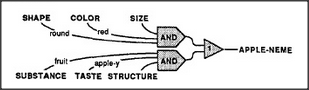
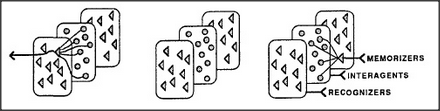

How do we recognize our own ideas? At first, that must seem a strange question. But consider two different situations. In the first case, I hold up an apple and ask, What is this? We've already seen how such a sight could lead to activating polynemes for words like apple or fruit. In the second case, there is no apple on the scene, and I ask instead, What do we call those round, red, thin-peeled fruits? Yet this time, too, you end up with an apple thought. Isn't it remarkable that one can recognize a thing merely from hearing words? What is there in common to our recognizing things in two such different ways? The answer is that inside the brain, these situations really aren't so different. In neither case is there a real apple in the brain. In both cases, some part of mind must recognize what's happening in certain other parts of mind.
Let's pursue this example and imagine that those words have caused three partial states to become active among your agencies. Your Taste agency is in the condition corresponding to apple taste, your Physical Structure agency is representing thin-peeled, and your Substance agency is in the state that corresponds to fruit. Thus, even though there is no apple in sight, this combination would probably activate one of your apple polynemes. Let's call them apple-nemes for short. How could we make a machine do that? We would simply attach another recognizer to the apple-neme, a recognizer whose inputs come from memories instead of from the sensory world.

In a limited sense, such an agent could be said to recognize a certain state of mind or — if we dare to use the phrase — a certain combination of ideas. In this sense, both physical and mental objects could engage similar representations and processes. As we accumulate these recognizers, each agency will need a second kind of memory — a sort of recognition dictionary of recognizers to recognize its various states.
This simple scheme can explain only a little of how we represent ideas, since only certain things can be described by such simple lists of properties. We usually need additional information about constraints and relationships among the parts of things — for example, to represent the knowledge that the wheels of a car must be mounted underneath its body. To discover how we might represent such things is becoming a major concern of modern research in both psychology and Artificial Intelligence.